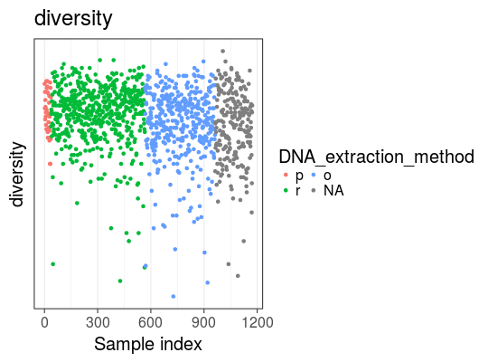
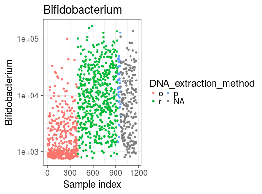

Show all samples of a microbiota collection, colored by specific factor levels (x axis) and signal (y axis).
plot_atlas(pseq, x, y, ncol = 2)
ggplot object
Arranges the samples based on the given grouping factor (x), and plots the signal (y) on the Y axis. The samples are randomly ordered within each factor level. The factor levels are ordered by standard deviation of the signal (y axis).
See citation("microbiome"); Visualization inspired by Kilpinen et al. 2008, Genome Biology 9:R139. DOI: 10.1186/gb-2008-9-9-r139
data(atlas1006) plot_atlas(atlas1006, "DNA_extraction_method", "diversity")plot_atlas(atlas1006, "DNA_extraction_method", "Bifidobacterium")